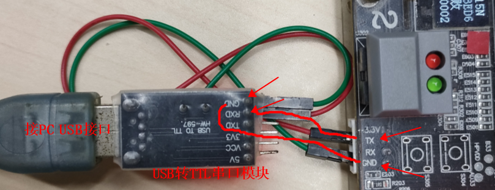
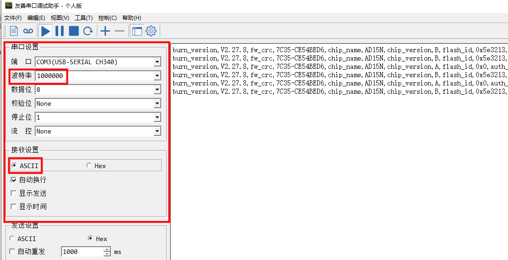
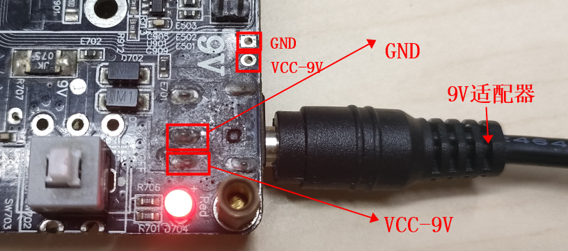

1.11. Other Common Features: Configuration and Use
1.11.1. Flash SPI parameter configuration
To program one or more files located in the same directory as isd_config.ini, such as "file1.bin" and "file2.bin", into a specified location of the chip flash with the programmer, so that the SDK can use the data:
1.11.2. Programming of custom resource files
To program one or more files located in the same directory as isd_config.ini, such as "file1.bin" and "file2.bin", into a specified location of the chip flash with the programmer, so that the SDK can use the data:
1.11.3. Configuring flash parameter programming and testing that protection parameters take effect
If a specified address area of the chip flash needs data protection, you can configure the flash write protection feature in the isd_config.ini file in the download directory. The programmer writes the protection parameters to the flash so that the SDK can configure flash write protection.
See "Configuring flash parameter programming and testing that protection parameters take effect"
1.11.4. Programming with top boards without and with an LDO
The 1-to-2 programmer supports programming with a top programming board that has an LDO conversion circuit, i.e. one that converts 6.5V to 4.2V, 5V or another voltage,
and also supports programming without an LDO conversion circuit (saving materials), in which case the programmer directly outputs the voltage that the chip model needs for normal programming
For the top board programming wiring, see "Chip Programming Wiring and Power Supply"
Note
Programming sockets used to have an LDO conversion circuit because it was expected that some uncalibrated chips might reach customers and would then have to be calibrated by the programmer, or because programming the efuse of some chips requires specific voltages such as 6.5V or 3.3V;
The current programmer has a chip calibration check function: if a chip is not calibrated, programming reports an error! In addition, programming the efuse-related key, lvd, etc. no longer requires specific voltages;
Therefore, the LDO circuit can be removed from the programming socket, and the socket can be built as a minimum chip system for programming! This makes the programming socket simpler, saves materials and allows it to be used as a universal programming socket!
1.11.5. Chip performance test
While programming a chip, the programmer also tests the performance of each of the chip's modules. When you deploy the fw programming file
(for deployment with the 1-to-2 programmer, see "Deploying the target chip firmware to the programmer"),
a Configure (配置) option is available for configuring the chip screening test items. Normally, the default configuration is sufficient, but you can also configure them according to the customer's actual production situation.
For a description of each screening option, see "Common configuration items for each chip model"
1.11.6. Chip soft power-off power consumption test
The 1-to-2 programmer has a built-in power consumption test function; for example, AC696X supports the soft power-off power consumption test. It is used as follows:
Note
1. Configure the "Power consumption test (uA): xxx" (功耗测试(uA):xxx) option;
2. The test is off by default: select OFF to skip the soft power-off power consumption test;
3. To enable the test, enter a specific value, for example "10": the chip then undergoes the soft power-off power consumption test, and if the measured value is greater than 10uA, programming reports an error and the chip is treated as defective;
4. Note:
(1) The programming socket for the power consumption test does not need an LDO conversion circuit; if the socket has an LDO conversion circuit, do not check this option;
(2) Leave some margin in the limit value: for example, to screen out chips above 2uA, set 5uA or more
If you need the power consumption test function for a chip model, contact a Jieli engineer !
1.11.7. Optimizing programming time
Ways to shorten the programming time:
1. Check Blank chip programming (空片烧录) in the options for deploying the fw file. With this option checked, the step of reading the entire chip flash to verify that it is blank is skipped
2. If the chips in mass production have had no production quality problems for a long time, you can disable unnecessary chip screening test items; programming only the firmware greatly increases the programming speed
1.11.8. Controlling Bluetooth address programming over an RS232 serial port
1. With programmer firmware version V2.27.9, the "PC Bluetooth address programming tool" (PC蓝牙地址烧录工具) can control the programmer over an RS232 serial port to program Bluetooth addresses. This prevents duplicate and lost Bluetooth addresses and makes Bluetooth address data easier to manage;
2. To use this function, check "Serial port controlled programming" (串口控制烧录) in the "Configure" (配置) window on the PC, and connect the "PC Bluetooth address programming tool" and the programmer with an RS232 serial cable;
3. This function requires the customer's own database to manage the Bluetooth addresses; the addresses to be programmed are taken from the database
4. This function currently supports only the AC695X, AC635N, AC6083, AE695N, AC632N and AE632N chip models; if you need it for other models, contact Jieli technical support;
1.11.9. Printing programming information over the serial port
1. Purpose: to collect mass-production programming information for production management
2. Programming information that can currently be printed
Firmware version |
fw file checksum |
Chip model |
Chip version |
flash id |
Authorized count |
Programming success/failure count |
Programming time |
Error code and error message |
|---|---|---|---|---|---|---|---|---|
burn_ver,V2.27.8 |
fw_crc,7C35-CE54BED6 |
chip_name,AD15N |
chip_ver,B |
flash_id,0x5e3213 |
auth_times,0,used_times,0 |
pass_times,16,fail_times,8 |
burn_time,2095 |
burn_pass[1],E00-burn_ok |
3. Serial port hardware wiring
Connect the programmer's "debug serial port TX" to the "serial module RX", and the "programmer debug serial port GND" to the "serial module GND", as shown in the figure below.

3. PC tool serial port configuration

A PC serial terminal tool that is stable and can filter out noise is recommended
4. Save the log information as a .csv file for analysis
You can save the log collected by the serial terminal tool as a .csv file for data analysis and processing
1.11.10. Soldering wires to the programmer's 9V power supply
When the programmer is built into equipment, solder wires that lead outside so that the production line can easily reset it when a problem occurs. The wiring is shown in the figure.

1.11.11. Erasing the chip flash on its own
Add the following configuration to the isd_config.ini file in the download directory of any fw file, then click download.bat in the download directory to generate a new fw file;
[BURNER_PASSTHROUGH_CFG]
ERASE_FLASH_MODE=YES;
Deploy the above fw file to the programmer;
In any of the modes (programming, verification or blank check), press the
Start buttonto erase the chip on its own. After erasing, the programmer verifies whether the entire flash contains all FF; if the success count on the display increases by 1, the erase was successful;
1.11.12. AD698N/AC638N DAC OS test
1.11.12.1. Test description
The DAC OS test is a screening test item of the 1-to-2 programmer, used mainly to screen out chips with abnormal DAC diode characteristics;
The DAC OS test requires a DAC OS test circuit on the top board, and the top board's "voltage reference source must be calibrated" before use;
Programming error messages
E06_DAC_OS_ERR: the chip failed the DAC OS test and must be screened out for further analysis;
E06_OS_INIT_ERR: DAC module initialization error; retry, and if programming fails repeatedly, check the hardware circuit;
1.11.12.2. Procedure
Adjusting the reference source of the DAC OS top board
[1] Remotely upgrade the programmer to firmware that supports the DAC OS test, i.e. programmer firmware version V2.25.5 or later;
[2] When updating the chip firmware fw file, check the "DAC OS" test item in the programming options;
[3] Install the top board with the DAC OS test circuit on the programmer;
[4] Power on the programmer;
[5] Use a multimeter to measure the voltage between test points +3.3V and -1.25V on the top board that supports the DAC OS test, and adjust the potentiometer until the multimeter reads 4.55V. This completes the reference source adjustment of the DAC OS top board, as shown in Adjusting the reference source of the DAC OS top board.
Important
Steps [3] and [4] must never be performed in reverse order

Adjusting the reference source of the DAC OS top board
Follow the normal programming, verification and blank check procedures to program, verify and blank-check chips together with the DAC OS test.